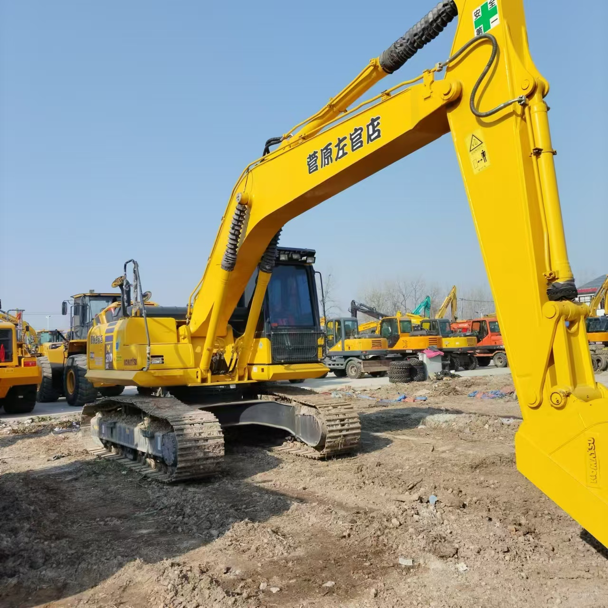

Refurbished Komatsu PC210 Excavator
The Komatsu PC210 is a robust hydraulic excavator designed for a wide range of construction, mining, and demolition tasks. Known for its power, fuel efficiency, and operator comfort, the PC210 is a go-to machine for projects requiring precision and productivity. Opting for a refurbished Komatsu PC210 can be a smart decision for businesses looking for cost-effective solutions while still maintaining top-tier performance and reliability.
Honestly, it's almost impossible to buy a brand new excavator from China. They either don't exist or are made in China. If a Chinese seller tells you their Caterpillar/Komatsu/Volvo/Kobelco/Hitachi is brand new, they're lying. Therefore, a refurbished excavator is your best bet.

Here are the detailed specifications for a refurbished Komatsu PC210LC-8 or PC210LC-10 excavator:
Operating Weight and Dimensions
- Operating Weight: 21,000–22,500 kg
- Overall Length: ~10.0–10.3 meters
- Overall Width: ~3.0–3.2 meters
- Overall Height: ~3.2 meters
- Tail Swing Radius: ~3.1–3.3 meters
- Ground Clearance: ~470–500 mm
- Track Width: 600–700 mm standard
Engine and Powertrain
- Engine Model: Komatsu SAA6D107E-1 (Tier 3 compliant)
- Rated Power Output: ~165–172 hp (123–128 kW) @ 2,000 rpm
- Maximum Torque: ~750–800 Nm
- Fuel Tank Capacity: ~400 liters
- Travel Speed: 3.4–5.5 km/h
- Swing Speed: ~10 rpm
- Gradeability: Up to 70% (35°)
Hydraulic System
- Main Pump Type: Closed Center Load Sensing (CLSS) axial piston pumps
- Flow Rate: ~2 × 220–240 L/min
- System Pressure: Up to 34.3 MPa
- Hydraulic Oil Capacity: ~240–260 liters
- Boom Cylinder Bore: ~130 mm
- Arm Cylinder Bore: ~115 mm
- Bucket Cylinder Bore: ~105 mm
Performance Metrics
- Bucket Capacity: 1.0–1.2 m³ (SAE heaped)
- Max Digging Depth: ~6.7–7.0 meters
- Max Reach (Horizontal): ~10.2–10.4 meters
- Max Dump Height: ~6.8–7.0 meters
- Bucket Digging Force: ~155–165 kN
- Arm Digging Force: ~115–125 kN
Cab and Operator Features
- Cab Type: ROPS/FOPS certified
- Display: LCD monitor with diagnostics and fuel tracking
- Controls: Electro-hydraulic joysticks with customizable sensitivity
- Comfort: Air suspension seat, climate control, low vibration cab
- Visibility: Rear-view camera, LED work lights, wide glass area
Smart Features and Efficiency
- Fuel Efficiency: Electronic engine control + auto idle shutdown
- Emissions Control: Tier 3 compliant (no DPF or SCR)
- Telematics Ready: KOMTRAX system for remote diagnostics and fleet tracking
- Attachment Memory: Preset hydraulic settings for multiple tools
Attachments Compatibility
- Standard Bucket: 1.0–1.2 m³
- Optional Tools: Hydraulic breaker, demolition shear, compactor, ripper
- Quick Coupler: Hydraulic or manual options available
Refurbishment Scope
Refurbished PC210 units typically include:
- Engine Overhaul: Turbocharger, injectors, seals, cooling system
- Hydraulic Restoration: Pump recalibration, valve block testing, hose replacement
- Electrical Diagnostics: Monitor, sensors, wiring harness
- Cab Reconditioning: Seat, joysticks, HVAC, repainting
- Structural Repairs: Boom/bucket welding, bushing replacement, undercarriage rebuild
Overview of the Komatsu PC210 Excavator
The Komatsu PC210 is part of Komatsu's popular line of medium-sized excavators. With its operating weight ranging from 21 to 24 tons, this model is built for versatility, making it suitable for various tasks such as digging, grading, lifting, and trenching. The PC210 offers a strong blend of power, digging depth, and hydraulic efficiency, making it a well-suited machine for urban construction, roadwork, and light to medium-duty excavation projects.
Key Specifications
-
Operating Weight: 21,000–24,000 kg (46,000–53,000 lbs)
-
Engine Power: 122–128 kW (163–172 hp)
-
Max Digging Depth: 6.5–6.8 meters (21.3–22.3 feet)
-
Max Reach: 9.8 meters (32.1 feet)
-
Bucket Capacity: 1.1–1.3 cubic meters
-
Travel Speed: 5.2 km/h (3.2 mph)
These features give the PC210 the flexibility to handle demanding tasks, from digging trenches to lifting and placing large materials with ease.
Engine and Hydraulic Performance
The Komatsu PC210 is equipped with a highly efficient engine and hydraulic system that offers optimal fuel economy and enhanced digging power. The PC210’s powerful engine allows it to carry out operations with ease, even in challenging environments.
-
Fuel-Efficient Engine: The PC210 features a low-emission engine designed for improved fuel efficiency, reducing operating costs over time.
-
Hydraulic System: The load-sensing hydraulic system automatically adjusts the hydraulic flow to optimize energy use and improve productivity.
-
Enhanced Power: Despite its mid-range size, the PC210 provides high hydraulic pressure and strong digging force, making it effective in tough conditions.
Undercarriage and Durability
One of the standout features of the Komatsu PC210 is its undercarriage, which is designed to withstand heavy-duty use in challenging environments. The undercarriage of a refurbished PC210 is often thoroughly inspected and restored during the refurbishment process to ensure long-lasting performance.
-
Heavy-Duty Tracks: Reinforced tracks and undercarriage components are built to provide stability and durability on rough terrains.
-
Extended Component Life: With proper maintenance, the PC210 can achieve a long service life due to its robust undercarriage.
-
Cost-Effective Refurbishment: Refurbishing the undercarriage ensures that the PC210 continues to perform like new, without the added cost of purchasing an entirely new machine.
Operator Comfort and Safety
The Komatsu PC210 is equipped with an operator’s cabin that prioritizes comfort and safety, making it suitable for long working hours.
-
Spacious, Ergonomic Cabin: The cabin is spacious and ergonomically designed to provide comfort and minimize operator fatigue. It includes adjustable seating and easy-to-reach controls.
-
Safety Features: The PC210 comes with ROPS (Roll-Over Protective Structure) and FOPS (Falling Object Protective Structure) to ensure the safety of operators. Additionally, the machine includes safety alarms and intuitive controls to avoid accidents.
-
Low-Vibration and Quiet Operation: With its efficient hydraulic system and sound insulation, the PC210 provides a quiet and low-vibration operation, increasing comfort during use.
Benefits of Choosing a Refurbished Komatsu PC210
A refurbished Komatsu PC210 offers a practical solution for businesses looking for a cost-effective yet reliable machine.
-
Significant Cost Savings: Refurbished models can cost up to 40%-50% less than new excavators, offering a budget-friendly option without sacrificing performance.
-
Comprehensive Refurbishment: Refurbished units undergo a thorough inspection and overhaul, ensuring that vital components such as the engine, hydraulic system, undercarriage, and cabin are in excellent working condition.
-
Warranty and Support: Many refurbished units come with a limited warranty, providing peace of mind and reducing the risk of unexpected repairs.
-
Sustainable Choice: Opting for a refurbished machine reduces environmental waste and extends the life of an existing excavator, making it an eco-friendly alternative to purchasing new equipment.
Maintenance Tips for Longevity
Proper maintenance is essential for getting the most out of a refurbished Komatsu PC210 and ensuring its longevity.
-
Routine Inspections: Conduct regular inspections of the engine, hydraulic system, and undercarriage to ensure everything is functioning optimally.
-
Change Fluids and Filters: Regularly change the engine oil, hydraulic fluid, and filters to maintain peak performance.
-
Track and Undercarriage Maintenance: Keep an eye on track tension and wear to prevent excessive damage. Regularly clean and inspect undercarriage components.
-
Cabin Care: Clean the cabin regularly, check for any damage to the controls or safety features, and ensure all systems are in good working order.
Conclusion
The Komatsu PC210 Excavator is a versatile, powerful, and reliable machine designed to meet the needs of construction and earthmoving projects. A refurbished PC210 offers a cost-effective way to access top-tier equipment, with performance that rivals a new machine. Through proper maintenance and care, a refurbished PC210 can deliver excellent service for years, making it a solid investment for construction companies, contractors, and rental fleets. Whether used for digging, lifting, or grading, the PC210 is a trusted workhorse that can tackle various tasks with ease.
Our Commitment
- 2 years / 4000 hours warranty.
- EPA certified.
- No sweatshop labor.
Contacts

- [email protected]
- Youtube Instagram Facebook
- Navigation: G206 (Sishu Bridge) in Changfeng County, Hefei City, Anhui Province, 200 meters north to the east